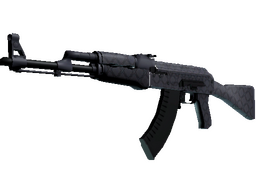

-
Baioneta (★) | Grade de Safári

Com design relativamente inalterado desde a Segunda Guerra Mundial, a baioneta ainda tem um lugar em estratégias militares modernas. Investidas de baionetas continuam eficazes, como visto recentemente na segunda Guerra do Golfo e na guerra no Afeganistão. Esta arma foi pintada com spray com uma grade de metal e cortes de papelão como estênceis. Um predador é um predador, não importa o ambiente.
-
AWP | Exoesqueleto
A infame AWP é conhecida por recompensar aqueles que arriscam, sendo famosa pelo funcionamento "Um tiro, uma morte". Esta AWP foi prensada cuidadosamente com padrões de caveiras entrelaçadas. Potência máxima.
-
AK-47 | Barroco Roxo
Poderoso e confiável, o AK-47 é um dos rifles de assalto mais populares do mundo. Ele é mais mortal em rajadas curtas e controladas. Esta arma foi revestida usando um padrão hidrográfico com inspiração italiana. A Última Ceia está na mesa.
-
Glock-18 | Nascer da Lua
A Glock-18 é uma boa pistola para começar a partida. É mais eficiente contra oponentes sem proteção e é capaz de disparar rajadas de três balas. Uma paisagem urbana aleatória em primeiro plano abre espaço para uma lua cheia e um céu arroxeado. Procure a Estrela Polar.
-
Soldado de Rua | Fênix
Uma gangue de força terrestre da Fênix especializada em ambientes urbanos de alta densidade. O conhecimento desse pessoal sobre caminhos secundários e becos só é superado pelo dos taxistas locais, que, reza a lenda, compõem boa parte do grupo. Eu conheço um atalho.
-
Soldado da Equipe SEAL 6 | NSWC SEAL
Prontos para o combate e famintos pela vitória, os soldados da Equipe SEAL 6 sabem como fazer o trabalho direito. Estou feliz por estar aqui.
-
Caixa da Revolução

Contém um dos seguintes itens:
- MAG-7 | Insônia
- MP9 | Peso-Pena
- SCAR-20 | Fragmentos
- P250 | Re.feita
- MP5-SD | Liquefação
- SG 553 | Ciberforça
- Tec-9 | Rebelde
- M4A1-S | Enforossauro-S
- Glock-18 | Coelho Umbrático
- MAC-10 | Sakkaku
- Revólver R8 | Bananólver
- P90 | Neorrainha
- AWP | Dualidade
- UMP-45 | Desgarrada
- P2000 | Sinistra
- M4A4 | Temukau
- AK-47 | Tiro na Cabeça
- ou Luvas excessivamente raras!
-
Pacote de Lembrança do Rio 2022 — Vertigo
Este item comemora o Campeonato Mundial de CS:GO Rio 2022 da IEM. Obtido durante a partida de Fase das Desafiantes entre Imperial Esports e Cloud9.
-
Desafiantes Regionais da CRM 2020
Esta cápsula contém um único adesivo de papel, holográfico, brilhante ou dourado de uma das equipes participantes da CRM 2020. O adesivo pode ser aplicado a qualquer arma no seu inventário e pode ser raspado para parecer mais desgastado. Você pode raspar o mesmo adesivo múltiplas vezes, tornando-o cada vez mais desgastado, até ser removido da arma.
-
Grafite Lacrado | Coração (Vermelho sangue)
Este é um padrão de grafite ainda lacrado. Ao abri-lo, você receberá cargas para grafitar este padrão 50 vezes no mundo do jogo.